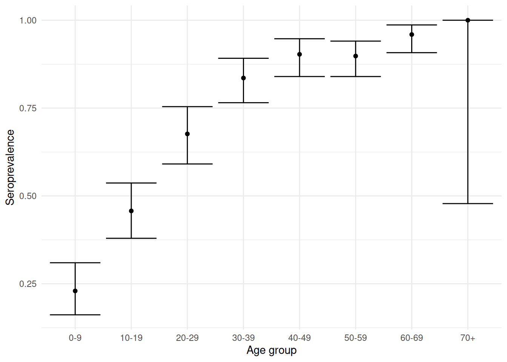
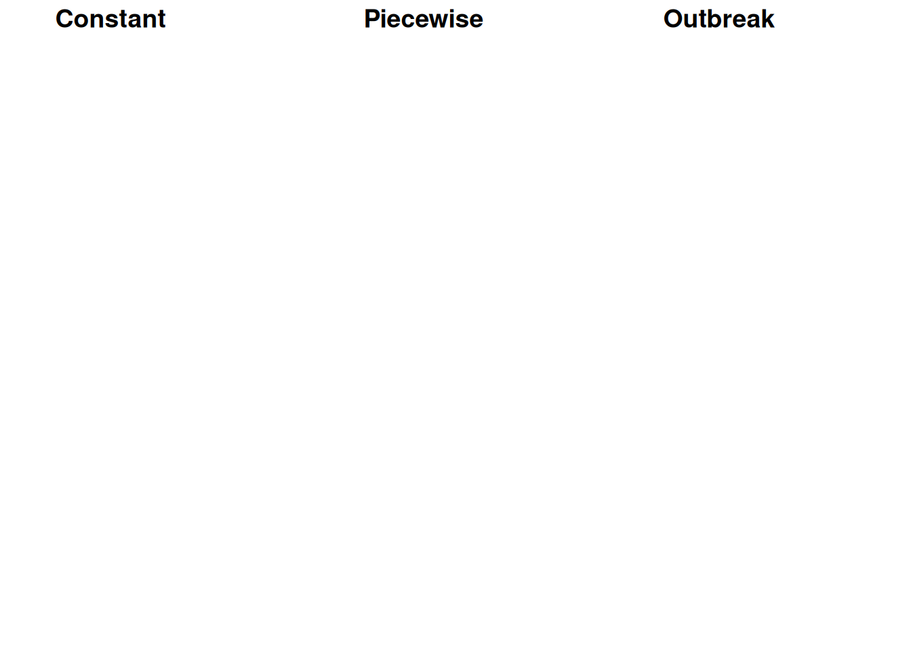
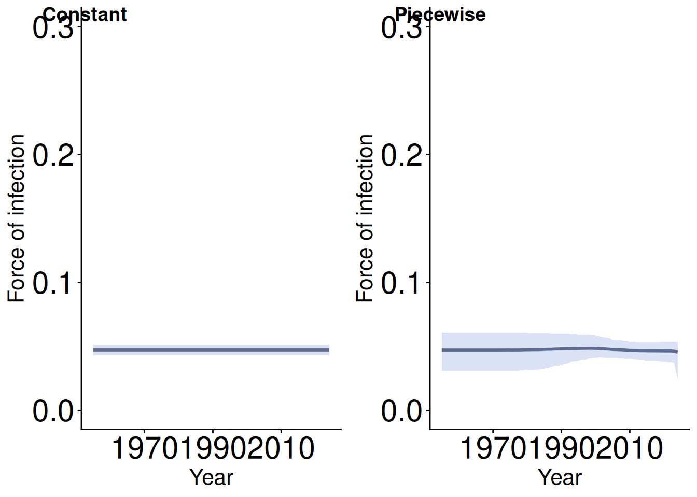

Code
library(Rsero)
library(tidyverse)
library(ggpubr) # we use this to arrange and save multiple plots togetherIn this practical, we are going to be fitting serocatalytic models to cross-sectional serological data using the R package RSero. In RSero the models are fitted to data using Markov Chain Monte Carlo implemented through Stan, a probabalistic programming language.
The aims of this practical are to:
Estimate the force of infection by fitting serocatalytic models to serological datasets using MCMC
Compare different models with different assumptions about historical transmission and decide which one fits the data best
Reconstruct past circulation of pathogens in the population
First, we will load in the R packages that we need
and download the simulated cross-sectional serology datasets used in this practical:
Each file contains a simulated dataset for 1000 participants, with sampling in 2024. The dataset has columns participant_id, age, and serostatus for 1,000 participants.
Let’s start with the first simulation dataset (data+1). We’ll group the data into 10 year age bins and then visualise seroprevalence by age.
agg_data_1 <- data_1 |>
mutate(age_group = cut(
age,
breaks = c(seq(0, 70, by = 10), Inf),
labels = c(
"0-9", "10-19", "20-29", "30-39",
"40-49", "50-59", "60-69", "70+"),
right = FALSE)) |>
group_by(age_group) |>
summarise(n = n(),
seropositive = sum(serostatus),
seroprevalence = mean(serostatus),
seroprevalence = seropositive / n,
ci_lower = binom.test(seropositive, n)$conf.int[1],
ci_upper = binom.test(seropositive, n)$conf.int[2], .groups = "drop")
ggplot(agg_data_1) +
geom_point(aes(x = age_group, y = seroprevalence)) +
geom_errorbar(aes(x = age_group, ymin = ci_lower, ymax = ci_upper)) +
theme_minimal() +
labs(x = "Age group", y = "Seroprevalence")
RSeroNext, we will prepare the data for use with RSero. RSero needs data to be in SeroData format, which needs the participants’ age at the time of sampling (age_at_sampling) and serostatus (Y).
We will now define some serocatalytic models to test.
In RSero you can specify several different models of force-of-infection over time. We will look at the following.
- Constant. This is the simplest (classic) serocatalytic model which assumes a constant force of infection over time. This works well for endemic pathogens that circulate continuously in the population and are fully immunising. - Piecewise-constant. This is an extension of the classic model where we assume there have been several periods of constant force of infection. This would work well (for example) if an intervention had recently been introduced which lowered the force of infection at a particular point in time. - Outbreak. This model describes pathogen with epidemic dynamics where there have been K epidemics in the past. The model will estimate the force of infection and the timing of K previous outbreaks, assuming that FOI can be described by K Gaussian-shaped curves.
Now let’s fit each model - this may take a few minutes.
You should see output from Stan on your console showing you how the sampling is progressing for each model and potentially giving you some warnings about the fit.
We now have three different model fits, with very different underlying assumptions about historical transmission. First let’s compare how well each of them fit the data visually. We can do this using the RSero function seroprevalence.fit().

RSero makes it easy to compare these with the compute_information_criteria function. We will use leave-one-out cross validation to compare them (PSIS-LOO). This aims to answer the question - how well would this model predict an individual participant’s serostatus if we left them out of the fit? The resulting score is called the elpd (higher = better predictions). Below, we’ll use loo_compare() from the loo package in R to rank all of our models and give the difference in elpd from the best one
model elpd_diff se_diff p_worse diag_diff diag_elpd
model1 0.0 0.0 NA
model2 -0.8 0.2 1.00 |elpd_diff| < 4
model3 -133.1 13.9 1.00 From this we can tell that model 3 (outbreak model) is clearly the worst at explaining the data. However, models 1 and 2 seem very similar and there’s a very small difference in elpd between them. Let’s take a look at the estimated FOI for both.
constant_foi <- plot(constant_fit_1, YLIM = 0.3)
piecewise_foi <- plot(piecewise_fit_1, YLIM = 0.3)
# Note we need the [[1]] here as RSero's plot function returns a list where the first element is the plot we need
ggarrange(constant_foi[[1]],
piecewise_foi[[1]],
ncol = 2,
labels = c("Constant", "Piecewise"))
From these plots it’s clear the piecewise model is estimating very similar FOI for the two time periods - in fact it looks almost identical to the constant model.
We can also look at the estimated parameters for the piecewise model to see when the model thinks the FOI changes to a second level
2.5% 50% 97.5%
Annual Prob. Infection (in %)_1 0.4977057 4.410961 5.255145
Year_ 2 1981.4067510 2005.704625 2029.681020
Annual Prob. Infection (in %)_2 3.0556615 4.647215 5.872510
mean
Annual Prob. Infection (in %)_1 3.804773
Year_ 2 2007.260056
Annual Prob. Infection (in %)_2 4.601266You can see here that this estimate is really uncertain, with a 95% credible interval ranging from 1980 to 2026.
To decide between these two models we’ll follow the principle of parsimony. That is, if two models perform equally well we should choose the simplest one as it’s clear the added complexity is not needed.
In the next section you can follow the same analysis plan looking into data_2. How would you describe historical transmission of the pathogen in this dataset?
Remember to have a look at what seroprevalence looks like by age, this will give you clues as to what models you might like to test.
We set K=1 when using piecewise and outbreak models in the first part but you can change K to look at multiple change points in FOI or multiple outbreaks in the past.